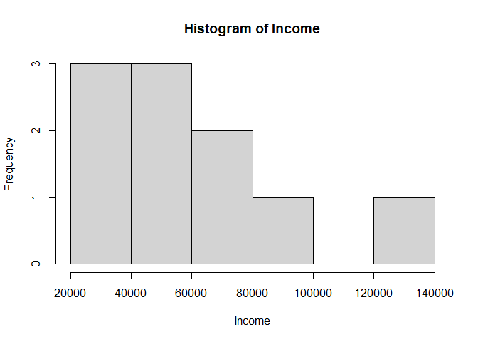
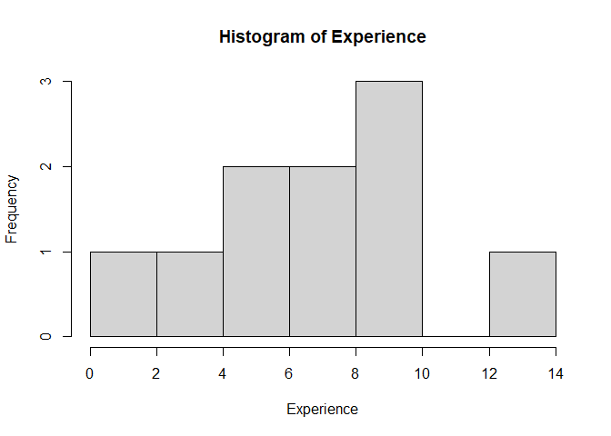
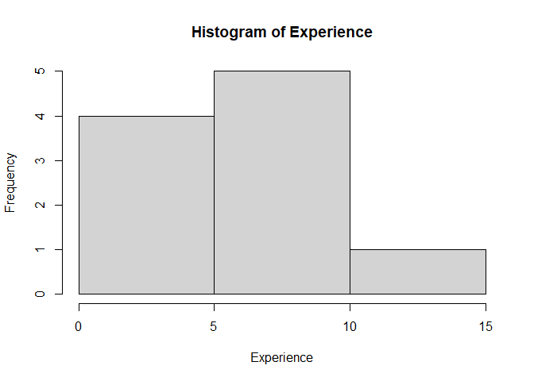
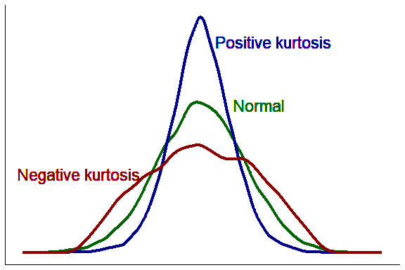
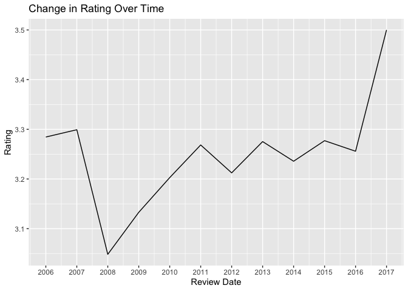

Basic Data Analysis
So far, we have created our own objects by manually entering all of the data in the console. In this section, we will learn how to create objects by importing (aka ‘reading’) data (compiled outside of R) into R, perform basic statistics on it, and visualize it with a histogram.
Importing data into R (Desktop)
Working directory (Desktop)
Before importing your data into R, it is important to understand what the working directory is. The working directory is the location on your computer (i.e., the folder) where R looks for files when importing data and where it saves files. You typically want to have all the files related to a single project in the same folder, so that R can easily find them, and you know where they are saved.
You can check the path of your working directory by running the function getwd() in the console.
Check your code
getwd()## [1] “A Path to a Folder”
You will get a path to a folder on your computer. This is your current working directory.
More often than not, you will want to change your working directory to a specific folder rather than the default folder. To do that, you can use the setwd() function. Inside the parentheses (i.e. as the function parameter), you should type the path to the folder between quotes. For example, let’s assume you want your working directory to be a folder called “my_project” that is in the main Documents folder. You would type:
setwd("C:/Documents/my_project")Check your code
setwd("Path to Folder") # NOTE: you should change this to the path to the folder in your computer!If you are working alone on your scripts, always on the same computer, it is good practice to start every script by setting the working directory using setwd(). However, once you start collaborating with others, the path to the folders can be different between computers. At that point, you might want to learn about R Projects, which makes all paths relative to a pre-specified project working directory. You can read more about it here.
Importing tabular data
Now that you have your working directory set up, you can import your data into R. R can handle multiple file types:
- .csv (comma-separated values)
- Excel (.xls, .xlsx)
- .txt (and .tsv - tab-separated values)
- .json (used for nested data structures)
- These would likely be arrays of more than 2 dimensions.
- SPSS (another specialized statistics software)
- Data scraped from the web or via an API.
For tabular data, you will most likely be importing .csv or .xlsx files. In this workshop, we will work with .csv files because you can import them with base R. If you have your data in Excel, you can save it as .csv by clicking on File > Save as. If you want to import .xslx files directly, you will need to install a specific package (see here).
Please save the file in your working directory, specified in the task above.
Import Data into posit.cloud
In the “Files” pane, click “Upload”.
{kind=link}
Click the “Choose File” option and navigate to the file you want to upload.
{kind=link}
read.csv()
Once the file is in posit.cloud, you will need to read the csv into R.
To import a .csv file in R, you can use the read.csv() function. This function takes as its main argument the name of the file you want to import. This should be in quotes and include the file type.
If you want R to import your file and save it in an object, you need to specify the name of the object and use the <- symbol to assign the imported file to the object:
# This code will create an object called object.name with the data from the .csv file
object.name <- read.csv("path-to-file.csv")Attention: if you do not assign an object to the imported file, R will simply print the imported data in the console and not save it in an object for future use. Always import data by assigning it to an object.
Check your code
income <- read.csv("income.csv")After running this code, you should see the object “income” in your environment panel in the top right.
If you get an error message that says “No such file or directory”, it’s probably because you did not save the .csv file in your working directory, or because there is a typo in the file name.
There are other functions in R to import other types of tabular data, and a generic function called read.table(), which is really useful if you need to specify some details when importing data, for example, which values to consider NA. To learn more about it, check this.
Data frames
Now that you imported your file into R, we can take a closer look at it. The file you just imported is an object of the type data frame.
To check that, you can run the code:
# The function class() tells you the type of object. It is good for checking if you imported your files correctly
class(income)## [1] "data.frame"- Data frame
- essentially a table. It is a two-dimensional object that can hold different types of data.
- Usually, data frames are used to store values of variables (i.e. the columns) recorded for different observations (i.e. the rows). For example, different observations made for different cats.
- Data frames can contain one or more columns and one or more rows. - All values in a column are related (e.g., column 1 = age, column 2 = eye color)
- Because the column contains the same type of information, it is equivalent to a vector (i.e., the ‘eye color’ column will contain characters, not numbers).
- One row denotes one object from the set. For example, in the data frame of information about a set of cats, each row contains information about one specific cat.
- A row can contain many different bits of information, like age (numerical), eye color (character), breed (character), whether or not it’s spayed/neutered (boolean). Because rows may contain values of different types, one row would most likely not be a vector. It would likely be a list, which can contain values of different types.
To see the data in your data frame, simply enter the name of the data frame in the console and type ‘enter’ or ‘return’.
income## id gender income experience
## 1 1 M 23000 3
## 2 2 M 55000 7
## 3 3 M 43000 5
## 4 4 F 37000 5
## 5 5 M 75000 9
## 6 6 M 72000 10
## 7 7 F 121000 13
## 8 8 F 27000 1
## 9 9 F 57000 8
## 10 10 F 91000 10If you data frame is too long, you might want to just check the top rows. You can do that with the function head():
head(income)## id gender income experience
## 1 1 M 23000 3
## 2 2 M 55000 7
## 3 3 M 43000 5
## 4 4 F 37000 5
## 5 5 M 75000 9
## 6 6 M 72000 10Another useful way to inspect your data frame is to use the str() function:
str(income)## 'data.frame': 10 obs. of 4 variables:
## $ id : int 1 2 3 4 5 6 7 8 9 10
## $ gender : chr "M" "M" "M" "F" ...
## $ income : int 23000 55000 43000 37000 75000 72000 121000 27000 57000 91000
## $ experience: int 3 7 5 5 9 10 13 1 8 10This tells you that your data frame is made of 10 observations of 4 variables. It can be inferred that this data relates to 10 people. It then tells you the name of each variable (id, gender, income, experience), the data type of each variable (int = integer, chr = character), and the first few values of each column.
You can use the $ symbol to refer R to specific columns inside your dataframe. For example, if you want to check the individual values for gender, you can type:
income$gender## [1] "M" "M" "M" "F" "M" "M" "F" "F" "F" "F"These columns are treated as vectors in R, so if you wanted to get the 4th value of the column gender, you can use the indexing inside [] that you learned in the previous section:
income$gender[4]## [1] "F"If you want to explore more ways to view and preview the content of our data frames, check out the Data Analysis with RStudio - Data cleaning and manipulation and visualization workshop. You can also go here for more information about data frames.
Summary statistics.
Statistics is:
- the science of collecting, analyzing, and interpreting
- data to uncover patterns and trends,
- and inform decisions based on this data.
If you’re unfamiliar with statistics, you can learn more about it from the w3school Statistics Tutorial
In this section, we’ll be focusing on
- Basic statistical measures
- Presenting data in a histogram
More on data visualization is covered in the Data Analysis with RStudio - Data cleaning and manipulation and visualization workshop, and more on data analysis, such as statistical tests, is covered in the Data Analysis with RStudio - Intermediate data analysis workshop.
Basic statistical measures
The function names for the following three statistical measures (mean, median, standard deviation) are quite intuitive.
It is just the name or abbreviation of the statistical measure, where the argument is the object containing the set of values we are analyzing.
Each function takes the vector containing the values of the variable as its argument.
These three functions are designed for sets of numerical and integer data types. If run on other types (character, aka text, and boolean, aka true/false), the result will be NA.
Check your code
# output the average income
mean(income$income)## [1] 60100Check your code
median(income$income)## [1] 56000The output tells you the income value that falls between the higher income half and the lower income half of the people in your dataset.
Check your code
sd(income$income)## [1] 30479.32Up until now, you were calculating mean, median and standard deviation for one single variable in your data frame. However, often you will want to calculate that for the entire data frame. For this, a useful function is summary(), which takes a data frame as input and returns a summary of each variable as the output.
Check your code
summary(income)## id gender income experience
## Min. : 1.00 Length:10 Min. : 23000 Min. : 1.00
## 1st Qu.: 3.25 Class :character 1st Qu.: 38500 1st Qu.: 5.00
## Median : 5.50 Mode :character Median : 56000 Median : 7.50
## Mean : 5.50 Mean : 60100 Mean : 7.10
## 3rd Qu.: 7.75 3rd Qu.: 74250 3rd Qu.: 9.75
## Max. :10.00 Max. :121000 Max. :13.00Histograms
- Histogram
- A graph used for understanding and analysing the distribution of values in a vector.
A histogram illustrates:
- Where data points tend to cluster
- The variability of data
- The shape of variability
The histogram will appear in the Plots tab (bottom right quadrant if you haven’t modified your RStudio layout).
To create a histogram, you can use the function hist(). For example, for a histogram of the income data:
# Remember that income$income grabs the variable "income" in the data frame "income"
hist(income$income){kind=link}
We can also pass in additional parameters to control the way our plot looks.
Some of the frequently used parameters are:
main: The title of the plot- e.g.,
main = "This is the Plot Title"
- e.g.,
xlab: The x-axis label- e.g.,
xlab = "The X Label"
- e.g.,
ylab: The y-axis label. “Frequency” is the default value, and you don’t have to specify it unless you would like a different label.- e.g., ylab = “The Y Label”
Multiple parameters are given to a function by putting them in parentheses separated by commas, function_name(parameter1, parameter2):
# The first parameter is the name of the data (vector) object
# 'main' is the graph title
# 'xlab' is the label of the x-axis
# label parameters can be in any order, but following the data object
# y-label on a histogram defaults to "frequency". You can add 'ylab=""' if you'd like.
hist(income$income, xlab="Income", main = "Histogram of Income")
Check your code
hist(income$experience, main = "Histogram of Experience", xlab = "Experience")
We can see in the histogram that there are 7 intervals with equally spaced breaks. In this case, the height of a cell is equal to the number of observations falling in that cell.
- Why are there 7 intervals? R automatically chooses the number of intervals for you.
Additional: If you preferred having fewer or more intervals (i.e., ‘bins’), use can set that using the breaks parameter.
Check your code
# breaks is equal to the number of intervals
# You can add the custom labels if you would like `main='Histogram of Experience',xlab='Experience', `
hist(income$experience, main = "Histogram of Experience", xlab = "Experience", breaks = 3)
Packages and additional functions
One of the most fascinating things about R is that it has an active community developing a lot of packages everyday, which makes R very powerful. A package is a compilation of functions (data sets, code, documentations and tests) external to R that provide it with additional capabilities. For example, if you want to calculate the skewness and kurtosis of a variable or distribution, you will need to install an additional package called “moments” that has those functions, as they are not available in base R.
We can install packages in the console using the install.packages() function. You should use the console and not the code editor to run this code because you only need to install the package once.
Check your code
install.packages("moments") # Install the moments packageHint: wrap the package name in "" quotations, because it is a string type.
Note: The installation may take a while. When it’s complete, the right angle bracket > will appear at the last line of your console.
Confirm installation
To check if the package is installed, enter the following in the console
# Paste these lines into the console, and then run.
installed <- installed.packages() # this creates an object with names of installed packages
"moments" %in% rownames(installed) # this looks for moments in that object
## [1] TRUELoad the libraries.
After we install a package, we have to load it using the library() function.
- Do not wrap the package name in quotes when using
library().
Why no quotations for library()?
When you install a package in R using install.packages(), the package name must be a character string, hence the quotes. This is because install.packages() is a function that takes a character vector as its argument, representing the names of the packages to be installed.
However, when you load a package using library() or require(), you’re not passing a character string; instead, you’re using a non-evaluated expression that refers to the package name. Here, the package name is an object of mode “name” which library() interprets as the name of a package to load.
In summary, the quotes are needed for install.packages() because it expects a character string, while library() is designed to take an unquoted name that it interprets as a package name.
Put this command in your R script, not in the console. Why? The package only needs to be installed once, but it needs to be loaded any time you are running your script.
# Load the packages
library(moments) Now that you have loaded the package moments, you can use it to calculate the kurtosis and skewness.
- Kurtosis
- characterizes the relative peakedness or flatness of a distribution compared with the normal distribution. Relatively peaked distribution are called “positive kurtosis” and indicated by values larger than 3 in the kurtosis estimator. Relatively flat distributions are called “negative kurtosis” and are indicated by values smaller than 3 in the kurtosis estimator.

To calculate the kurtosis of income, we use the function kurtosis() from the moments package. This function takes in as an argument a numeric vector:
kurtosis(income$income)## [1] 2.603855- Skewness
- characterizes the degree of asymmetry of a distribution around its mean. Positive skewness indicates a distribution with an asymmetric tail extending toward more positive values. Negative skewness indicates a distribution with an asymmetric tail extending toward more negative values.

Check your code
skewness(income$income)## [1] 0.6433921Great job! Now you know how to use the basic syntax of R in R Studio to calculate basic statistical measures! This is the official end of this workshop.